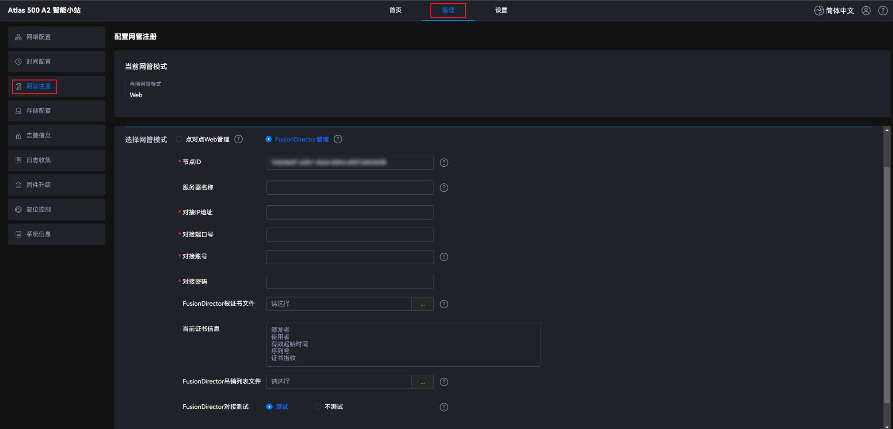

使用场景
- 点对点Web管理
用来单独管理一台Atlas 500 A2 智能小站，系统默认采用该模式。如果希望批量管理边缘设备，需要将网管模式切换为“FusionDirector管理”，以便纳入中心管理系统FusionDirector统一管理。
- FusionDirector管理
FusionDirector是用来对服务器和华为边缘设备进行统一运维管理的软件，提供对边缘设备的纳管、设备配置、固件升级等全生命周期的管理能力，有效帮助运维人员提高运维效率、降低运维成本。关于FusionDirector的详细介绍请参见《FusionDirector 操作指南》。
通过将网管模式切换为“FusionDirector管理”，使Atlas 500 A2 智能小站与FusionDirector对接，实现FusionDirector对批量Atlas 500 A2 智能小站的统一管理。
如果用户部署了FusionDirector软件，可以使用该模式。
操作步骤
- 在主菜单中选择“管理 > 网管注册”。图1 配置网管注册
 - 在“配置信息”区域，选择网管模式。
- 点对点Web管理：Atlas IES默认采用点对点Web管理方式单独管理一台Atlas 500 A2 智能小站，通过浏览器输入Atlas 500 A2 智能小站的管理IP地址，进行点对点的设备管理。
- FusionDirector管理：Atlas 500 A2 智能小站作为边缘节点，与中心管理系统FusionDirector连接，纳入FusionDirector统一管理。根据实际的应用场景设置以下参数。图2 FusionDirector管理


- 如果同一网卡上配置了多个IP地址，纳管到FusionDirector上显示的IP是随机的，无法确定是哪个设备。如果想要指定纳管到FusionDirector上的IP地址，可以通过绑定出口路由的方式实现。例如：假设FusionDirector的IP地址为192.168.100.15，设备上同一网卡上有2个IP地址192.168.1.100和192.168.1.101，如果要指定192.168.1.100纳管到FusionDirector上，则通过命令ip route add 192.168.100.15 via 192.168.1.1 src 192.168.1.100配置即可实现。
- 当已纳管FusionDirector处于就绪时，Web界面不允许上传FusionDirector根证书，需要去纳管就绪的FusionDirector上导入其他FusionDirector的根证书，以实现FusionDirector之间的网管切换。
表1 参数说明 参数
是否必选
说明
节点ID
必选（自动识别）
本设备对接FusionDirector的节点ID，使用默认参数。
修改该参数需要填写满足UUID（通用唯一标识符）格式的字符串。UUID是一个长度为128位的标识符，通常用来表示网络中的实体。
该参数格式为由数字和字母a~f组成，包含8个数字和字母组成的一组（32位），使用“-”分隔，再由4个数字和字母组成的一组（16位），使用“-”分隔；再由4个数字和字母组成的一组（16位），使用“-”分隔，再由4个数字和字母组成的一组（16位），使用“-”分隔，最后是包含12个数字和字母组成的一组（48位）。
参考格式为1aab2222-abc3-de45-123d-56789abcfdff。
说明：若Atlas 500 A2 智能小站发生故障，更换后的Atlas 500 A2 智能小站节点ID应和原始Atlas 500 A2 智能小站节点ID配置一致。通过FusionDirector界面选择，在设备列表中查看故障设备的节点ID。
服务器名称
可选
如果用户在FusionDirector上导入自定义的服务证书，则需要在边缘设备上导入对应签发机构的根证书（通过Web界面上“FusionDirector根证书文件”字段可以导入），用于校验FusionDirector的自定义服务证书，同时还需要填写“服务器名称”字段校验FusionDirector自定义服务证书的域名。该字段要求与FusionDirector自定义服务证书的CN（Common Name）字段保持一致。
如果用户使用的是华为初始的服务证书，则无需填写此字段。
须知：用户自定义服务证书的CN字段不能包含关键字“huawei”，否则会导致设备与FusionDirector对接失败。
如果服务器名称输入以“*.”开头的域名，保存配置后，“*.”会被替换成“fd.”。
对接IP地址
必选
表示FusionDirector的访问IP地址，取值为IPv4地址。
对接端口号
必选
表示FusionDirector对接端口号，取值在[1, 65535]，目前只支持443。
对接帐号
必选
表示FusionDirector对接帐号，默认账号为EdgeAccount。
说明：采用默认EdgeAccount对接成功之后，对接账号会自动采用FusionDirector下发的新的一机一密重新对接。一机一密账户和密码由FusionDirector的业务微服务自生成，详细信息请参考《FusionDirector 维护指南》。
对接密码
必选
表示FusionDirector对接密码。- 如果对接的FusionDirector版本为1.7及以上版本，密码请参见《FusionDirector 操作指南》中的“设备快速入门 > 边缘设备 > 添加边缘设备”章节。
- 如果对接的FusionDirector版本为1.7以下版本，密码请参见《FusionDirector 操作指南》中的“设备快速入门 > 边缘设备 > 注册FusionDirector网管信息”章节。
FusionDirector根证书文件
可选
第一次对接FusionDirector必须上传根证书文件。点击
 ，上传根证书文件。如果是多级证书，需要合并成一个证书文件导入，建议上级证书放在后面。该参数为可选参数，使用系统初始证书时可以不配置该参数。出于安全考虑，建议用户使用自己的证书和公私钥对，并定期更新，保证证书的有效性和安全性。当证书过期或者被吊销导致设备与FusionDirector对接不上时，请重新导入根证书文件。为了保证根证书的安全性，根证书使用的签名算法和密钥长度要求如下：
，上传根证书文件。如果是多级证书，需要合并成一个证书文件导入，建议上级证书放在后面。该参数为可选参数，使用系统初始证书时可以不配置该参数。出于安全考虑，建议用户使用自己的证书和公私钥对，并定期更新，保证证书的有效性和安全性。当证书过期或者被吊销导致设备与FusionDirector对接不上时，请重新导入根证书文件。为了保证根证书的安全性，根证书使用的签名算法和密钥长度要求如下：- 如果使用非对称加密算法，建议使用RSA（3072位及以上密钥）。
- 如果使用哈希算法，建议使用SHA2（256位及以上密钥）。
建议使用用户自定义的根证书。另外华为也提供了根证书，获取方法如下：
登录FusionDirector，在FusionDirector界面上方依次选择“菜单 >系统管理 > 安全管理 > 证书管理"，点击“服务证书”，单击“FusionDirectorServer”栏目里的“导出”，下载证书压缩包（rootCerts.zip）到本地。解压下载的证书压缩包，获取需要的证书rootCertChain.crt。
说明：若设备处于已纳管状态，则不能再次上传证书。
FusionDirector吊销列表文件
可选
为了安全起见，上传FusionDirector根证书后，建议导入证书吊销列表，用来校验FusionDirector证书是否被吊销。如果FusionDirector证书已被吊销，则设备与FusionDirector将不能对接。该证书由用户自行提供。
FusionDirector对接测试
必选
系统默认选择对接测试。
- 如果选择对接测试，会对节点ID和设备与FusionDirector的连通性进行测试，如果测试不通过，则FusionDirector网管切换失败。
- 如果选择不测试，不会对节点ID和设备与FusionDirector的连通性进行测试，FusionDirector网管切换成功，但这可能会导致FusionDirector纳管失败。
在Atlas 500 A2 智能小站离线集中配置（无法连接FusionDirector）的场景下，可以选择不测试，但需要保证FusionDirector参数的有效性，即节点ID不能在FusionDirector上重复，且IP地址、用户名和密码有效。 其他场景建议都进行测试，避免输入错误导致纳管失败。
- 单击“保存”。
页面提示“网管模式切换成功”，表示配置网管注册成功。